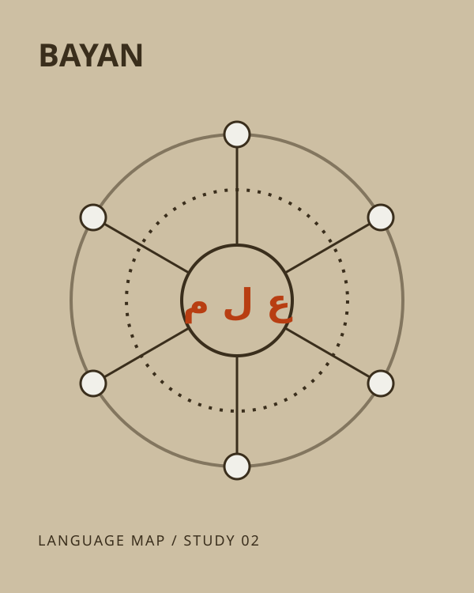
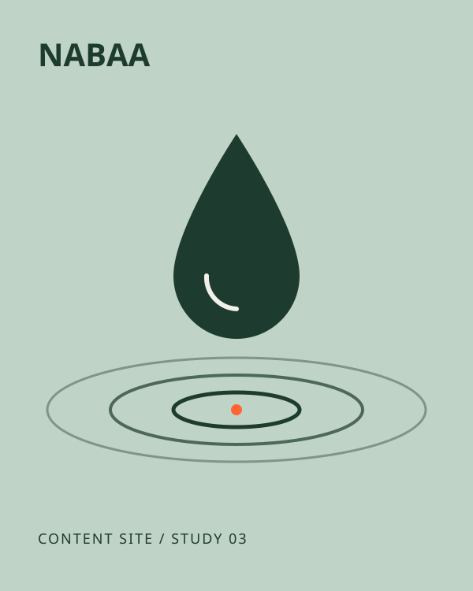

أنظمة تحليل وأتمتة / محتوى معرفي / مشاريع شخصية
من الفكرة
للنظام: تحليل واضح.
أنا هند، أبني أدوات تحليل وأتمتة بمساعدة الذكاء الاصطناعي — خصوصًا لأسواق الفوركس — وأكتب محتوى معرفيًا منظّمًا يشرح الفكرة خطوة بخطوة.
شوف الأعمال ↓
أعمال مختارة.
-
ميزان
مشروع شخصينظام دعم قرار للفوركس
ربط قواعد تحليل مكتوبة بجدول بيانات وروبوت تنفيذ، بحيث يكون كل قرار قابلًا للمراجعة. دوري: التصميم والبناء والاختبار.
-

بيان
مشروع شخصيدراسة لغوية لمفردات قرآنية
تتبّع جذر الكلمة ومعانيها اللغوية وسياقاتها في الآيات، وعرضها كخريطة مبسّطة. دوري: البحث والتنظيم والكتابة.
صفحة التفاصيل قريبًا.
-

نبع
مشروع شخصيموقع محتوى معلوماتي
موقع مقالات تعليمية عن مياه الينابيع الطبيعية، مبني على هيكل مواضيع واضح وكتابة تراعي البحث. دوري: المحتوى والهيكلة.
صفحة التفاصيل قريبًا.
عنّي.
أتعلّم بنفسي وأبني بالتجربة. أستخدم نماذج الذكاء الاصطناعي كبنية لدعم القرار: تجمع وتلخّص وتقترح، والقرار النهائي يبقى قابلًا للفحص.
أشتغل بين ثلاثة مجالات: الأسواق المالية وأتمتتها، والمعرفة اللغوية والقرآنية، والمحتوى الرقمي المنظّم. القاسم المشترك: تحويل الفكرة المبعثرة إلى نظام مرتّب.
طريقة العمل
- فكرة أو سؤالأبدأ من مشكلة محدّدة، مش من الأداة.
- تحليلأفكّك المشكلة وأسأل حتى تتضح المبادئ.
- نظامأبني نسخة بسيطة قابلة للفحص — جدول، روبوت، أو صفحة.
- مراجعةأختبر، أوثّق ما تغيّر، وأحسّن خطوة واحدة كل مرة.
عندك فكرة نظام أو محتوى؟
أرسل وصفًا قصيرًا للفكرة: شو المشكلة، ولمين، وشو المواد المتوفّرة. برد عليك بالبريد.
hello@example.comعنوان تجريبي — يُستبدل بالبريد الحقيقي قبل النشر.